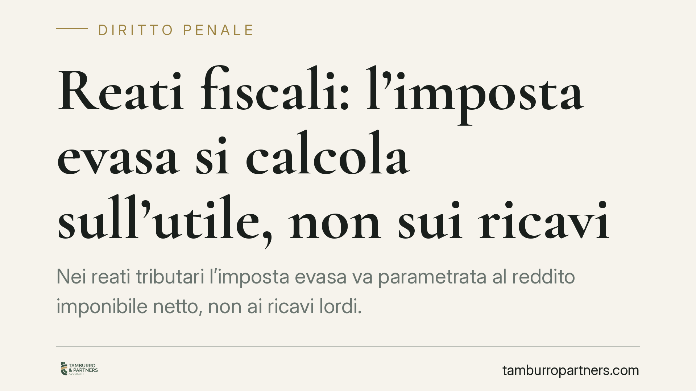

Reati fiscali: l'imposta evasa si calcola sull'utile, non sui ricavi
Nei reati tributari l'imposta evasa va parametrata al reddito imponibile netto, non ai ricavi lordi. Un orientamento della Suprema Corte conferma che i costi deducibili, anche se non contabilizzati ma provati, vanno scomputati. Se così si scende sotto la soglia di punibilità, cade l'accusa e con essa i reati derivati come l'autoriciclaggio e il relativo sequestro.

Il caso
Un contribuente viene indagato per dichiarazione infedele. La contestazione muove dai ricavi lordi accertati dalla Guardia di Finanza, senza deduzione dei costi sostenuti per produrli. Su quella base viene superata la soglia che rende penalmente rilevante la condotta, contestato l'autoriciclaggio come reato derivato e disposto il sequestro.
Il punto controverso è semplice: l'imposta che si assume evasa va calcolata sui ricavi incassati o sull'utile effettivamente tassabile? La differenza non è teorica. Cambia la cifra dell'imposta evasa e, con essa, il superamento o meno della soglia di punibilità.
Inquadramento normativo
L'art. 3 del D.lgs. 74/2000 (dichiarazione fraudolenta mediante altri artifici) e l'art. 4 (dichiarazione infedele) ancorano la rilevanza penale al superamento di soglie di imposta evasa. Per la dichiarazione infedele, l'art. 4 fissa oggi la soglia a 100.000 euro di imposta evasa (oltre a un ulteriore requisito sull'ammontare degli elementi attivi sottratti). *[Valore da verificare alla luce delle modifiche normative vigenti.]*
La nozione di imposta evasa è definita dall'art. 1, lett. f), D.lgs. 74/2000 come la differenza tra l'imposta effettivamente dovuta e quella dichiarata. "Imposta dovuta" significa imposta calcolata sul reddito imponibile, cioè ricavi al netto dei costi deducibili. Non sui ricavi lordi.
Un orientamento consolidato della Corte di Cassazione, sezione penale, ha più volte affermato che in sede penale il giudice deve tenere conto anche dei costi non contabilizzati, purché provati con allegazioni certe o comunque ricostruibili. *[Orientamento Cass. pen. sez. III; riferimenti puntuali da verificare.]* La ragione è che il processo penale accerta il fatto nella sua realtà, non si limita a recepire le risultanze formali della contabilità.
L'effetto a cascata
Il ragionamento ha una conseguenza che va oltre il singolo reato fiscale.
L'autoriciclaggio (art. 648-ter.1 c.p.) è un reato derivato: presuppone un reato presupposto che generi un provento illecito. Se l'imposta evasa, ricalcolata sull'utile netto, scende sotto la soglia di punibilità, il reato fiscale presupposto non sussiste. Venuto meno il presupposto, cade anche l'autoriciclaggio.
Di riflesso, viene meno il fumus commissi delicti che giustificava il sequestro. Senza la parvenza di reato, la misura cautelare reale perde il proprio fondamento e deve essere revocata. Il contribuente recupera la disponibilità dei beni.
Implicazioni pratiche
Per chi riceve una contestazione tributaria con risvolti penali, il dato è operativo: non basta subire la quantificazione dell'ufficio. L'imposta evasa va ricostruita in modo autonomo, deducendo i costi effettivamente sostenuti, anche quelli non registrati, se dimostrabili.
È una leva difensiva concreta. In molti casi la rideterminazione dell'utile imponibile riduce l'imposta evasa sotto le soglie di rilevanza penale, con effetto a cascata sugli eventuali reati derivati e sulle misure cautelari.
Attenzione però: il profilo penale resta distinto da quello tributario. Lo scomputo dei costi non contabilizzati, più ampio in sede penale, non neutralizza automaticamente la pretesa dell'Agenzia delle Entrate in sede amministrativa. Sono due binari con regole probatorie diverse.
Cosa fare in concreto
- Ricostruisci l'imposta evasa sul netto. Pretendi dal tuo difensore e dal consulente una quantificazione fondata sul reddito imponibile, non sui ricavi lordi contestati.
- Documenta i costi non contabilizzati. Raccogli fatture, contratti, pagamenti tracciati e ogni elemento che provi l'effettività dei costi sostenuti: in sede penale possono essere valorizzati.
- Verifica il superamento della soglia. Confronta l'imposta ricalcolata con la soglia di punibilità vigente per il reato contestato. È il dato che decide la rilevanza penale.
- Impugna il sequestro se cade il presupposto. Se la rideterminazione fa venir meno il fumus, chiedi il riesame o la revoca della misura cautelare reale.
- Tieni separati i due piani. Coordina la strategia penale con quella tributaria, ma non confonderle: possono avere esiti diversi.
Disclaimer
Contributo informativo a cura di Tamburro & Partners - Avv. Giuseppe Tamburro. Non costituisce parere legale.
Ogni condominio ha una storia a sé.
Se gestisci un'amministrazione e vuoi un confronto su una specifica questione condominiale, scrivi allo studio. Ti rispondiamo entro un giorno lavorativo.